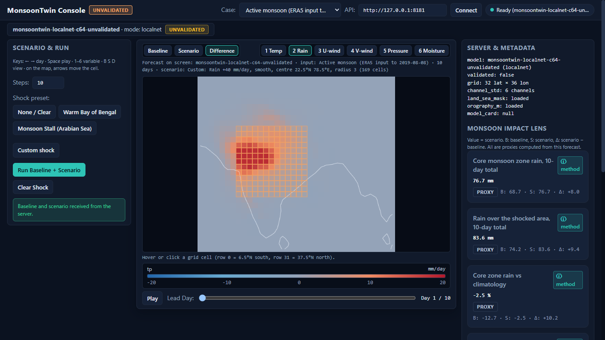

MonsoonTwin: a live, offline digital twin of India's weather
Yugaantar DevForge 2026 · Track 2 "Multiverse of Monsoon" · github.com/shashankedu02/yugantar-monsoon-kit
USP: a twin you can interrogate and audit. Pick real input days, paint a shock, and compare two live forecasts. Every result is labelled with the model that produced it, and every limit is stated where it affects the answer. It runs offline on a laptop CPU: a 10-day request took at most 155 ms on 4 processors.
System architecture and technical approach
3 days × 6 variables
32 × 36 grid (1°), day of year,
optional shock delta
→
serve.py (FastAPI)
validates, adds the delta to the
last day, clamps to limits
→
Engine
served: LocalNet C64
fallback: DAP
→
Dashboard (static, separate)
map, difference, charts,
Impact Lens
A zero shock gives output bit-identical to no shock. A response header names the model that answered each request. No network or dataset is used at inference.
Model design
Served: LocalNet C64, a 313,735-parameter residual CNN (3×3 stem, 4 blocks, 64 channels, per-cell normalisation; no down-sampling or global layers, so one step uses only nearby cells). It reads the last 3 days, the target day's climatology, land–sea mask, orography and calendar, and predicts one-day changes (rain in log1p space). One-step training, then 2- and 4-step rollout fine-tuning on 2005–2015; choices made on 2016–2017.
Fallback: damped anomaly persistence (DAP), fitted on the same years: x(d+k) = clim(d+k) + φ^k · (x(d) − clim(d)) per variable and cell. It answers if LocalNet cannot load or fails during a request; a non-finite step is replaced by one DAP step.
How drift and blur are limited
- Drift: multi-step fine-tuning on the model's own outputs, change (residual) prediction, and physical limits applied every step (rain never negative). All outputs in the 2018–2019 windows were valid; this does not guarantee realism. With unrealistic synthetic inputs, rain reaches the 1000 mm/day safety limit.
- Blur: day-8 spatial variance as a share of the real field: t2m 0.99, u10 0.75, v10 0.77, msl 0.96, tcwv 0.94, but rain only 0.27, under the 0.40 line we aim to stay above. Rain is visibly smoothed by day 8.
Local validation: 2018–2019 (test years 2020–2021 unused)
| 46 forecast windows + 6 × 2 shock tests | LocalNet (served) | DAP (fallback) |
|---|
| Day-4 skill against persistence | +0.249 | +0.196 |
| RMSE-skill points (of 30) · heavy-rain points (of 15) | 29.5 · 0.8 | 16.4 · 0.0 |
| Anti-blur (of 10) · shock causality (of 15) | 9.45 · 13.4 | 10.0 · 11.25 |
| Shocks local on day 1 · stable | 12/12 · 11/12 | 12/12 · 12/12 |
| Shocks spreading outward: warm ocean · monsoon stall | 6/6 · 2/6 | 0/6 · 0/6 |
Read with care: measured by one team member with the organisers' scoring functions and not independently reproduced by a second person. The points replicate 70 of the 100 locally (53.2 for LocalNet, 37.7 for the fallback); this is not the competition score. The judge uses other windows and does not publish how it averages skill; the point values depend on that choice.
Failure modes we know about
- Monsoon-stall shock: spreads in only 2 of 6 windows; in the others the response outside the shocked area fades or stays too small. Cause not established.
- One stability failure: after a small warm-ocean shock (window starting 22 May 2018), day-6 rain in one cell fell from 57 to 7 mm/day (6.7 standard deviations; limit 5). A shock response is model behaviour, not verified physics.
- Longer leads: clearly ahead of persistence and climatology at day 1, mostly slightly at day 4 (not pressure), behind both the better reference and DAP at day 8 on all six variables. Heavy-rain skill is near zero.
- Moisture can reach exactly zero at some high-altitude cells. Not run on Linux or the judge's hardware. The contract does not state the day-of-year base; we use 1 for 1 January.
Visualization and impact use case

Figure: live output of the running system. Input: 3 real days ending 8 Aug 2019 (ERA5). Shock: a smooth +40 mm/day rain blob centred at 22.5°N 78.5°E (radius 3 cells), added to the last input day. View: scenario − baseline rain, day 1. The cards show model scenarios, not observations.
MonsoonTwin Console
- Four real input cases chosen by fixed rules on the inputs; a synthetic input is clearly labelled.
- The organisers' two shocks (checked against their code), plus custom rectangle or smooth shocks on any variable, centred by clicking the map.
- Baseline, scenario and symmetric difference maps; map and legend share one colour function; a coastline from the supplied land–sea mask.
- Per-cell series against climatology, and shock energy against distance from the shocked area, using the organisers' energy definition.
- Runs are one snapshot: inputs lock, results appear only if all calls succeed, and stale results are removed. Keyboard operable.
Monsoon Impact Lens: a rain "what-if" desk
User: an agriculture or disaster-planning analyst asking "if conditions here changed today, what moves over the next 10 days?"
- Core monsoon zone (18–28°N, 65–88°E) rain total, and departure from climatology.
- Rain over the shocked area; heavy-rain cell-days (≥ 10 mm/day).
- Warm land cell-days (≥ +3 K above climatology); daily core-zone rain over time.
Each shows baseline, scenario and change, is computed in the browser from the arrays on screen, and carries its method and limitation.
Reading the example
In the figure, the 10-day core-zone rain total rises from 68.7 to 76.7 mm (+8.0) and rain over the shocked cells from 74.2 to 83.6 mm (+9.4). Most of the change comes early: over the shocked cells it is +7.0 mm/day on day 1, +1.8 on day 2, and between −0.4 and +0.4 afterwards. A total can hide changes of opposite sign, so the console also plots every day. This is how the model responds to injected rain; it is not evidence of how the atmosphere would.
Honesty box: what this is not
- 1° grid-mean daily values: not station rain, not maximum temperature, not a flood or heatwave warning. The IMD heatwave and monsoon-break criteria are not computed.
- Deterministic, no uncertainty estimate. Not for operational decisions.
- Every indicator is a proxy. Nothing pre-rendered is presented as a forecast by the console.
Data: Contains modified Copernicus Climate Change Service information (ERA5, Hersbach et al. 2020), via WeatherBench 2 (Rasp et al. 2024); ERA5 is licensed under CC BY 4.0. Neither the European Commission nor ECMWF is responsible for any use of this information. Dataset and scoring code: the organisers' yug-monsoon-kit.